import torch
import torch.nn as nn
import torchvision.transforms as transforms
from torchvision.datasets import ImageFolder
from torch.utils.data import Subset, ConcatDataset, DataLoader
import os
os.environ["CUDA_VISIBLE_DEVICES"] = "0"
import numpy as np
import matplotlib.pyplot as plt
%matplotlib inline
# Retina display
%config InlineBackend.figure_format = 'retina'Overconfident Neural Networks
Reference: https://www.kaggle.com/code/jramkiss/overconfident-neural-networks/notebook
# Read in data from data folder
train_dir = '../data/afhq/train'
valid_dir = '../data/afhq/val'
# Show some images
from torchvision import datasets, transforms# Show first image in each folder: cat, dog, wild
def show_image(path):
files = os.listdir(path)
img = plt.imread(os.path.join(path, files[0]))
plt.imshow(img)
# Remove axis ticks
plt.axis('off')
plt.show()
show_image(os.path.join(train_dir, 'cat'))
show_image(os.path.join(train_dir, 'dog'))
show_image(os.path.join(train_dir, 'wild'))
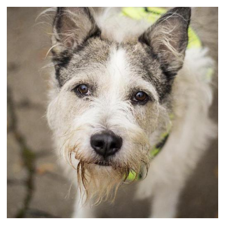
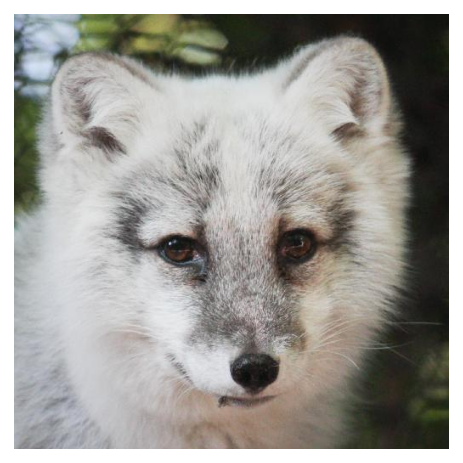
# Show sizes of each image
from PIL import Image
def show_image_sizes(path):
files = os.listdir(path)
img = Image.open(os.path.join(path, files[0]))
print(img.size)
show_image_sizes(os.path.join(train_dir, 'cat'))(512, 512)# Simple CNN with 3 convolutional layers, and 3 classes
class SimpleCNN(nn.Module):
def __init__(self):
super(SimpleCNN, self).__init__()
# Convolutional layers
self.conv1 = nn.Conv2d(3, 8, 3, padding=1)
self.conv2 = nn.Conv2d(8, 16, 3, padding=1)
self.conv3 = nn.Conv2d(16, 32, 3, padding=1)
self.conv4 = nn.Conv2d(32, 32, 3, padding=1)
# Max pooling layer
self.pool = nn.MaxPool2d(2, 2)
# Linear layers
self.fc1 = nn.Linear(32 * 32 * 32, 512)
self.fc2 = nn.Linear(512, 3)
# Dropout layer
self.dropout = nn.Dropout(0.25)
# Softmax
self.softmax = nn.LogSoftmax(dim=1)
def forward(self, x):
# Convolutional layers
x = self.conv1(x) # Input is 3x512X512, output is 8x512x512
x = nn.functional.relu(x)
x = self.pool(x) # Output is 8x256x256
x = self.conv2(x) # Input is 8x256x256, output is 16x256x256
x = nn.functional.relu(x)
x = self.pool(x) # Output is 16x128x128
x = self.conv3(x) # Input is 16x128x128, output is 32x128x128
x = nn.functional.relu(x)
x = self.pool(x) # Output is 32x64x64
x = self.conv4(x) # Input is 32x64x64, output is 32x64x64
x = nn.functional.relu(x)
x = self.pool(x) # Output is 32x32x32
# Flatten
x = x.view(-1, 32 * 32 * 32)
# Linear layers
x = self.fc1(x)
x = nn.functional.relu(x)
x = self.dropout(x)
x = self.fc2(x)
# Softmax
x = self.softmax(x)
return xcnn = SimpleCNN()
print(cnn)SimpleCNN(
(conv1): Conv2d(3, 8, kernel_size=(3, 3), stride=(1, 1), padding=(1, 1))
(conv2): Conv2d(8, 16, kernel_size=(3, 3), stride=(1, 1), padding=(1, 1))
(conv3): Conv2d(16, 32, kernel_size=(3, 3), stride=(1, 1), padding=(1, 1))
(conv4): Conv2d(32, 32, kernel_size=(3, 3), stride=(1, 1), padding=(1, 1))
(pool): MaxPool2d(kernel_size=2, stride=2, padding=0, dilation=1, ceil_mode=False)
(fc1): Linear(in_features=32768, out_features=512, bias=True)
(fc2): Linear(in_features=512, out_features=3, bias=True)
(dropout): Dropout(p=0.25, inplace=False)
(softmax): LogSoftmax(dim=1)
)cnn(torch.randn(1, 3, 512, 512))tensor([[-1.0659, -1.0911, -1.1402]], grad_fn=<LogSoftmaxBackward0>)# Number of batch_size = 32
transform = transforms.Compose([
transforms.Resize((512, 512)),
transforms.ToTensor()
])
# Load the dataset using ImageFolder and apply the transformation
train_dataset = ImageFolder(train_dir, transform=transform)
valid_dataset = ImageFolder(valid_dir, transform=transform)
# Select first 100 samples from cat classes
cat_indices = [idx for idx, label in enumerate(train_dataset.targets) if label == 0]
cat_indices = cat_indices[:100]
# Select first 100 samples from dog classes
dog_indices = [idx for idx, label in enumerate(train_dataset.targets) if label == 1]
dog_indices = dog_indices[:100]
# Select first 100 samples from wild classes
wild_indices = [idx for idx, label in enumerate(train_dataset.targets) if label == 2]
wild_indices = wild_indices[:100]
# Concatenate the indices
indices = cat_indices + dog_indices + wild_indices
# Create a concatenated dataset
train_subset = Subset(train_dataset, indices)
# Create the data loaders
train_loader = torch.utils.data.DataLoader(
train_subset,
batch_size=batch_size,
shuffle=True
)
import matplotlib.pyplot as plt
import numpy as np
# Iterate over the first batch of the train_loader
for images, labels in train_loader:
# Convert images and labels to numpy arrays
images = images.numpy()
labels = labels.numpy()
# Display the images and labels
fig, axes = plt.subplots(figsize=(10, 5), ncols=8)
for i, ax in enumerate(axes):
ax.imshow(np.transpose(images[i], (1, 2, 0)))
ax.set_title(f"Label: {labels[i]}")
ax.axis('off')
plt.tight_layout()
plt.show()
#break # Break after displaying the first batch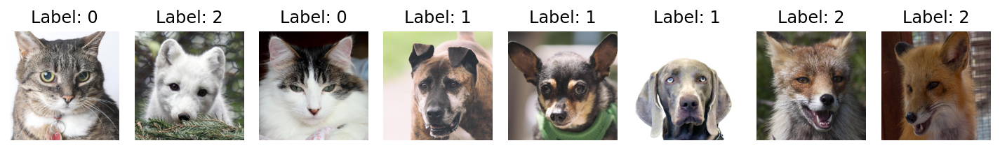
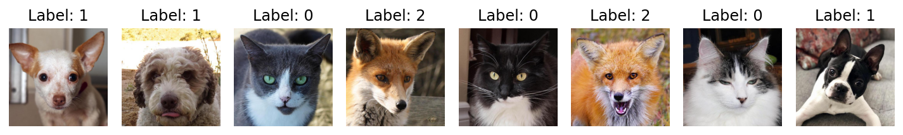
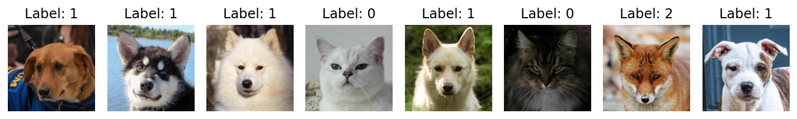
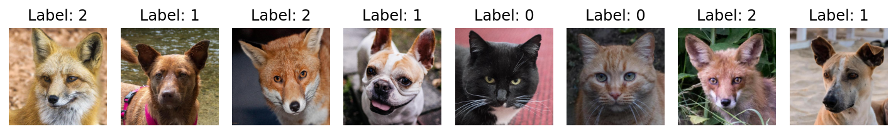
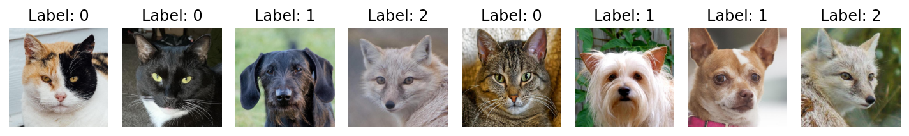
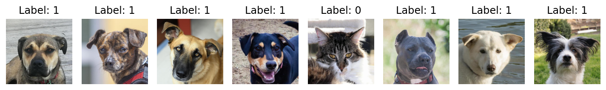
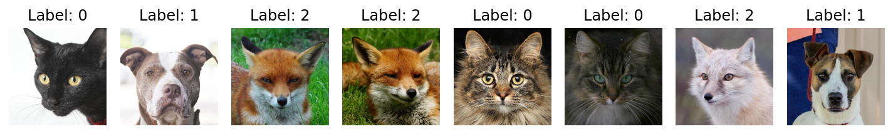
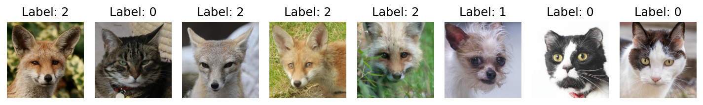
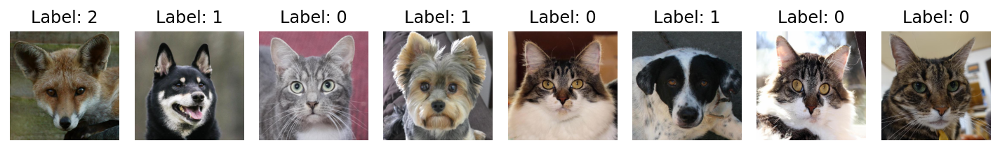
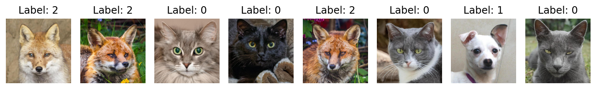
# Train the model
from torch import optim
# Loss function
criterion = nn.NLLLoss()
# Optimizer
optimizer = optim.Adam(cnn.parameters(), lr=0.001)
# Number of epochs
epochs = 1
# Move model to GPU
cnn.cuda()
# Train the model
for epoch in range(epochs):
train_loss = 0.0
valid_loss = 0.0
cnn.train()
for data, target in train_loader:
# Move tensors to GPU
data, target = data.cuda(), target.cuda()
# Clear gradients
optimizer.zero_grad()
# Forward pass
output = cnn(data)
# Calculate loss
loss = criterion(output, target)
# Backward pass
loss.backward()
# Update weights
optimizer.step()
# Update training loss
print(loss.item() * data.size(0))
train_loss += loss.item() * data.size(0)
cnn.eval()
# Average losses
train_loss = train_loss / len(train_loader.dataset)
34.59089279174805
35.19190216064453
36.06556701660156
34.57152557373047KeyboardInterrupt: # Predictions
cnn.eval()
images, labels = next(iter(train_loader ))
# Move tensors to GPU
images, labels = images.cuda(), labels.cuda()
# Get predictions
preds = cnn(images)
preds.argmax(dim=1)tensor([1, 2, 1, 1, 2, 1, 1, 2, 2, 2, 1, 2, 2, 2, 1, 2, 2, 2, 2, 2, 2, 1, 2, 2,
2, 2, 1, 1, 2, 2, 1, 2], device='cuda:0')